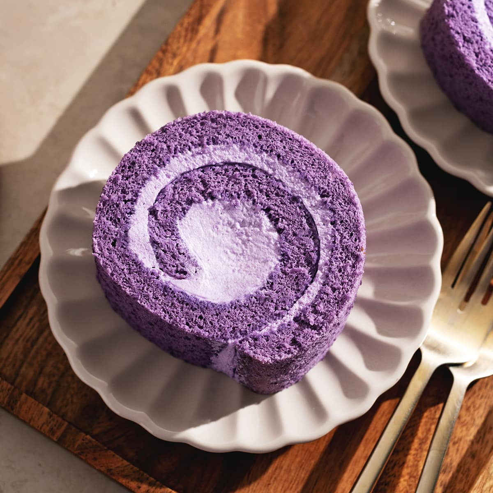
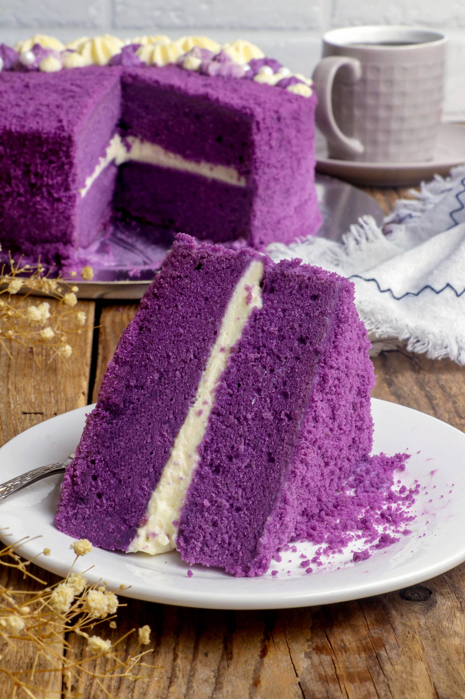
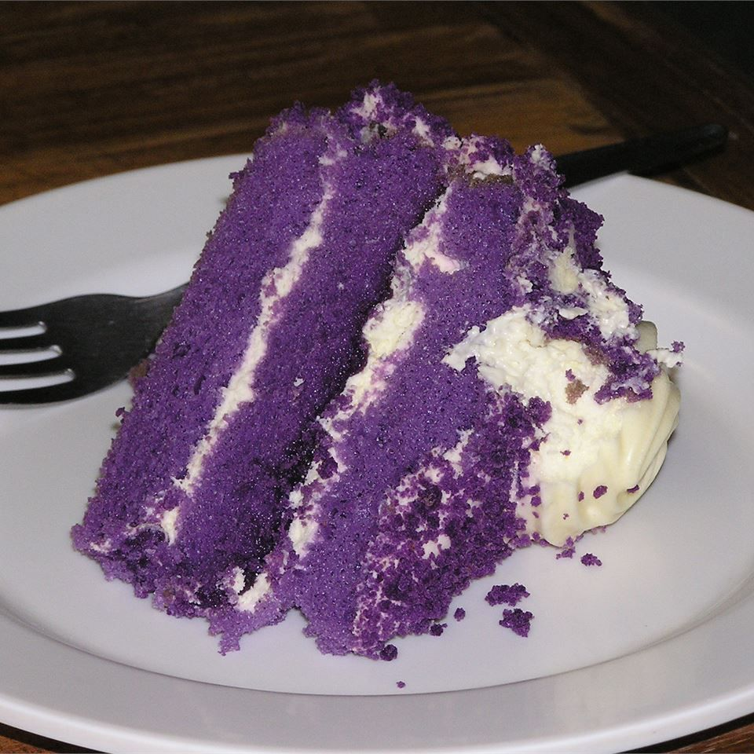
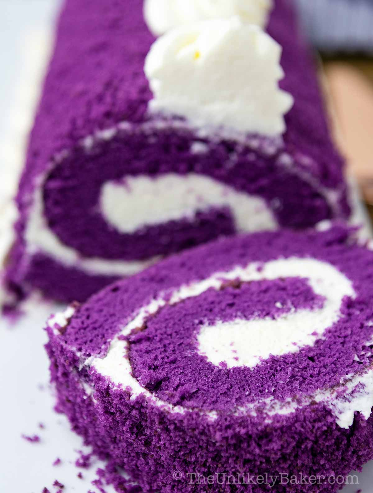
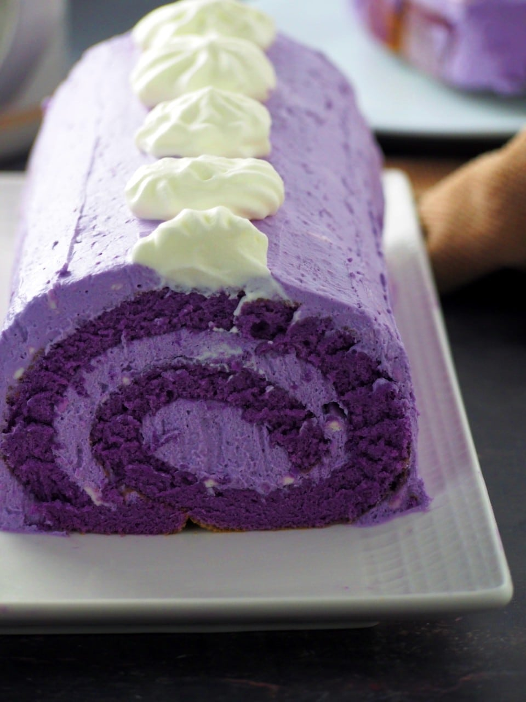

Ube Cake





History
Ang Ube Cake ay isang Filipino classic na cake na hango sa natural flavor ng ube o purple yam, na matagal nang bahagi ng lokal na desserts at kakanin. Sa paglipas ng panahon, pinagsama ang soft, moist cake layers at creamy ube frosting para maging paboritong birthday o celebration cake sa bansa. Ang Ube Cake ay simbolo ng Filipino creativity sa paggamit ng local ingredients at natural colors, at patok sa mga batang at matatanda alike dahil sa kakaibang flavor at vibrant purple hue.
Ingredients & Notes
All-purpose flour
Baking powder
Eggs
Sugar
Butter or oil
Ube halaya
Milk
Ube flavoring
Price
₱20